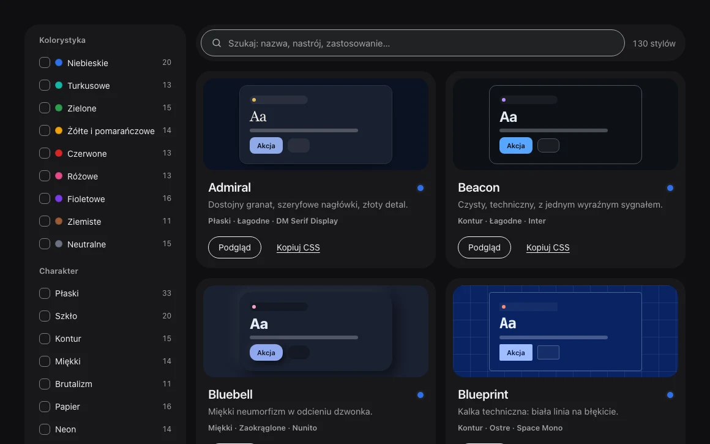
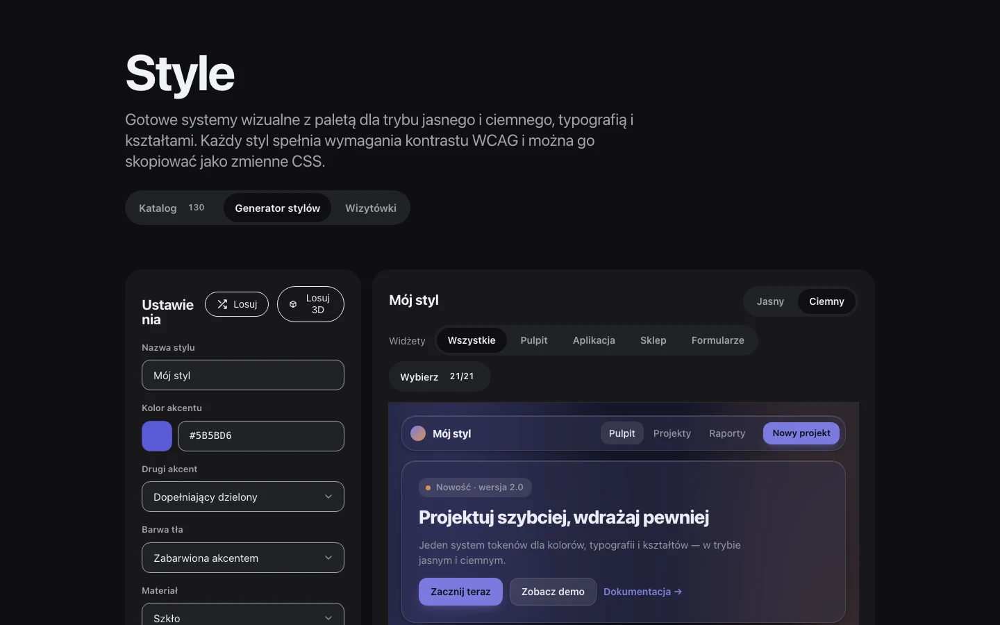
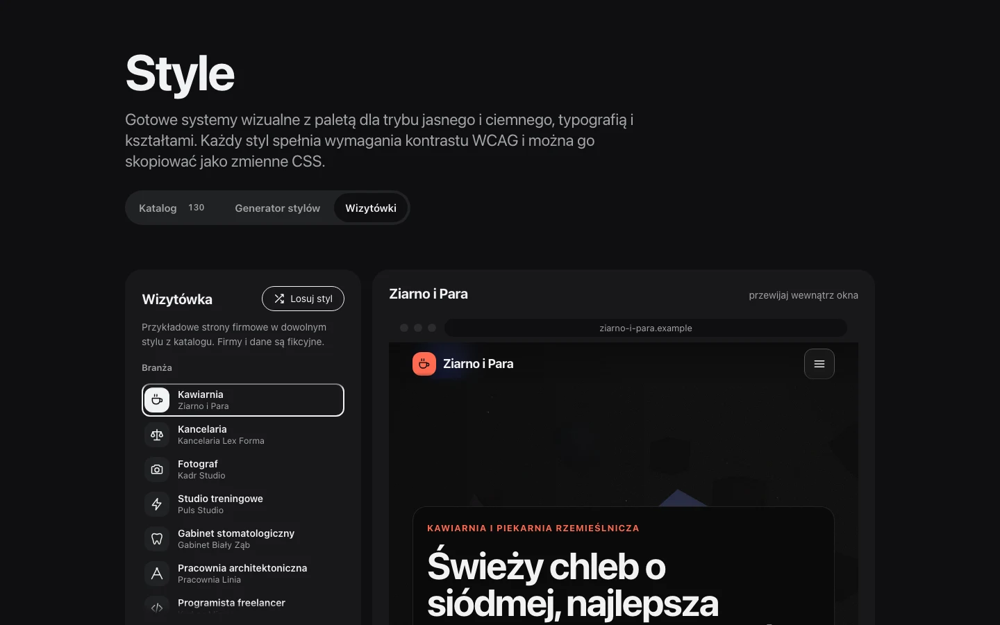
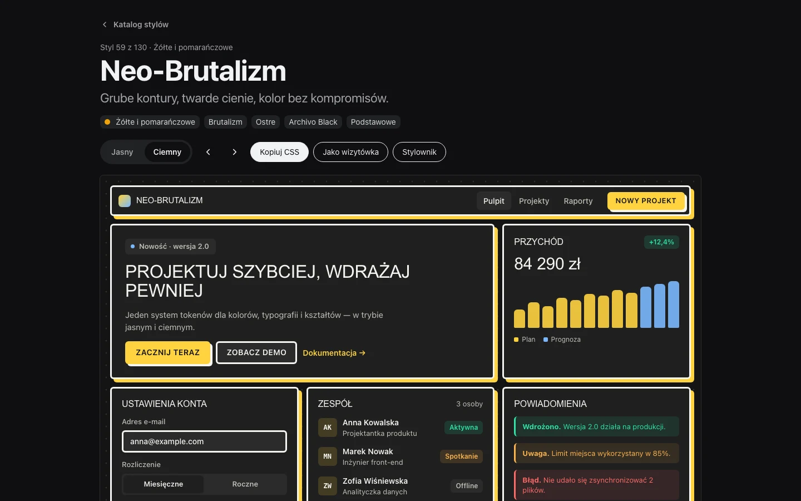

Autostrada.
Otwarty świat 3D (three.js): pięć map, paliwo i stacje, monety, zlecenia kurierskie, garaż z autami i zapis postępu.
Aplikacje webowe w Angularze i .NET, mobilne w React Native i Swift.

Katalog i generator stylów interfejsu. Aktualny projekt, w trakcie rozwoju, część tej strony.



HTML, CSS i JavaScript bez frameworków. JavaScript, CSS Container Queries, Design tokens, WCAG 2.2, Python.
Otwarty świat 3D (three.js): pięć map, paliwo i stacje, monety, zlecenia kurierskie, garaż z autami i zapis postępu.
Gra przeglądarkowa w JavaScript: kliknięcia, ulepszenia i podatek.
Urząd Komisji Nadzoru Finansowego
Tworzę aplikacje webowe i mobilne. Doświadczenie zawodowe zdobywam na stażu w Urzędzie Komisji Nadzoru Finansowego, gdzie rozwijam aplikacje w Angularze i .NET. Równolegle buduję aplikacje mobilne w React Native i Swift, wykorzystując narzędzia AI-native w całym cyklu wytwarzania oprogramowania.
| Technologia | Staż w UKNF | Aplikacje mobilne | Ta strona |
|---|---|---|---|
| Angular | tak | ||
| C# (.NET) | tak | ||
| Python | tak | tak | |
| TypeScript | tak | tak | |
| JavaScript | tak | tak | tak |
| React Native | tak | ||
| Swift | tak | ||
| HTML i CSS | tak | ||
| GitHub Copilot | tak | tak | |
| Claude Code, OpenCode, Antigravity, OpenSpec | tak |
Poza tabelą: C++ i SwiftUI.
Profil: programista full stack, od 2022 do 2027
Elektronika i mechatronika